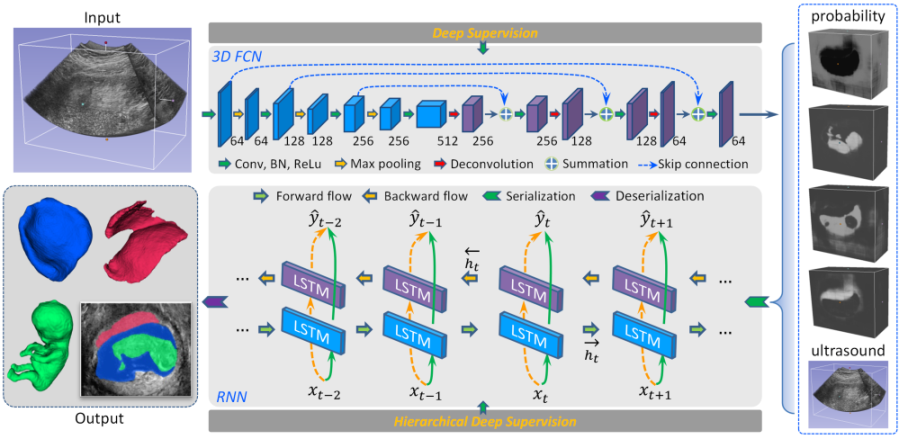
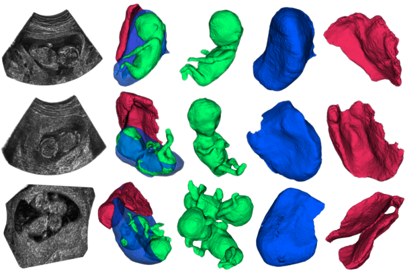
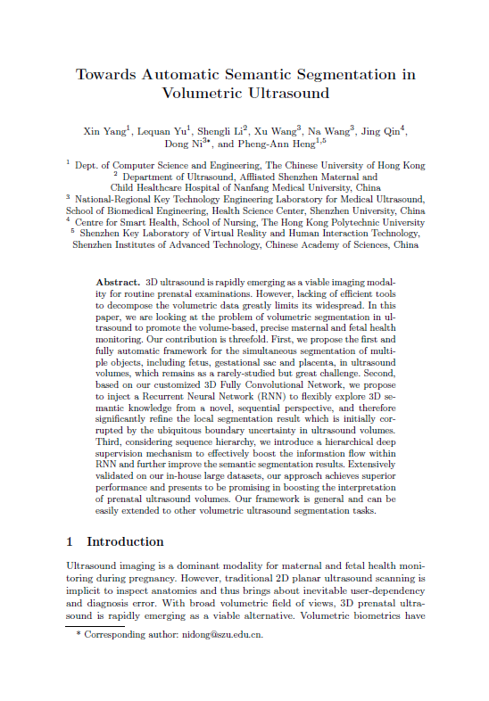

Towards Automatic Semantic Segmentation in Volumetric Ultrasound
Xin Yang1 Lequan Yu1 Shengli Li2 Xu Wang3 Na Wang3 Jing Qin4 Dong Ni3* Pheng Ann Heng1,5
nidong@szu.edu.cn
1The Chinese Univeristy of Hong Kong
2Affiliated Shenzhen Maternal and Child Healthcare Hospital of Nanfang Medical University
3Shenzhen University
4The Hong Kong Polytechnic University
5Shenzhen Institutes of Advanced Technology

Abstract
3D ultrasound is rapidly emerging as a viable imaging modality for routine prenatal examinations. However, lacking of efficient tools to decompose the volumetric data greatly limits its widespread. In this paper, we are looking at the problem of volumetric segmentation in ultrasound to promote the volume-based, precise maternal and fetal health monitoring. Our contribution is threefold. First, we propose the first and fully automatic framework for the simultaneous segmentation of multiple objects, including fetus, gestational sac and placenta, in ultrasound volumes, which remains as a rarely-studied but great challenge. Second, based on our customized 3D Fully Convolutional Network, we propose to inject a Recurrent Neural Network (RNN) to flexibly explore 3D semantic knowledge from a novel, sequential perspective, and therefore significantly refine the local segmentation result which is initially corrupted by the ubiquitous boundary uncertainty in ultrasound volumes. Third, considering sequence hierarchy, we introduce a hierarchical deep supervision mechanism to effectively boost the information flow within RNN and further improve the semantic segmentation results. Extensively validated on our in-house large datasets, our approach achieves superior performance and presents to be promising in boosting the interpretation of prenatal ultrasound volumes. Our framework is general and can be easily extended to other volumetric ultrasound segmentation tasks.
Method
|  |
Schematic view of our proposed framework. System input is an ultrasound volume. Our customized 3D FCN firstly conducts dense voxel-wise semantic labeling and generates intermediate probability volumes for different classes. The RNN trained with hierarchical deep supervision then explores contextual information within multiple volume channels to refine the semantic labeling. System output are extracted volumes of fetus, gestational sac and placenta. |
Results
|

From left to right: cutaway view of ultrasound volume, cutaway view of complete segmentation to show spatial relationship, volume of fetus, gestational sac and placenta. |

|
|  | "Towards Automatic Semantic Segmentation in Volumetric Ultrasound", MICCAI 2017 Xin Yang, Lequan Yu, Shengli Li, Xu Wang, Na Wang, Jing Qin, Dong Ni, Pheng-Ann Heng |
Acknowledgments
We would like to acknowledge the great effort from our doctors in discussing and annotating the data. It's lucky for us to be the candidate to realize doctor's ideas in this emerging field.
"Live and Let Better Live."
Last update: Sept., 2017